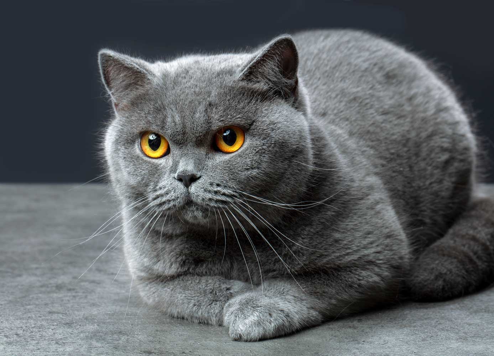
The British Shorthair is a version of the traditional British domestic cat. They are big, solid cats with chunky bodies, strong legs, broad heads, and large piercing eyes. The most common coat color seen in this breed is the "British Blue", though the breed includes a wide range of coat colors and patterns that complement their rich, dense coats.
The British Shorthair is considered one of the oldest cat breeds. It was first introduced to Great Britain (now the United Kingdom) by the Romans and is thought to share common ancestry with native wild cats of Britain. Food shortages during World Wars I and II brought the breed close to extinction. To increase their numbers and promote genetic diversity, breeders began outcrossing them with Persians, Russian Blues, and Burmese.
This dignified breed is famous for its easygoing and patient nature. While very affectionate, British Shorthairs aren’t known as lap cats and do not tend to enjoy being picked up or carried around. The British Shorthair is sweet-natured and can make a great companion for anyone seeking a low-maintenance cat.
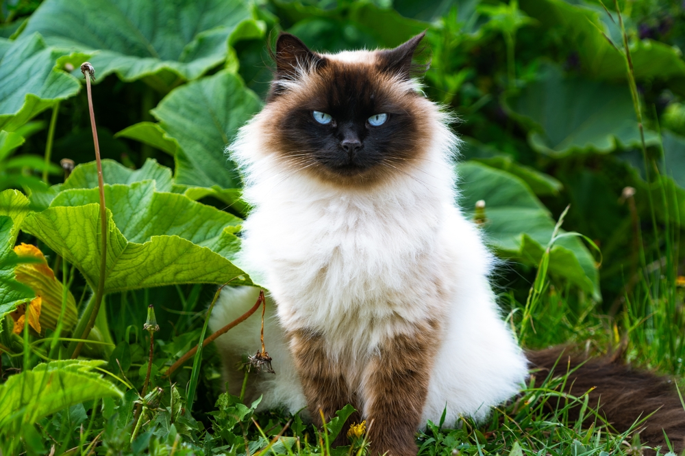
A medium-sized breed of cat, the Himalayan is a friendly companion prized for its long, silky-soft coat. They are also referred to as the "colorpoint Persian", with points that may exhibit tabby, lynx, or tortoiseshell patterns in a range of colors including lilac, seal, blue, chocolate, flame, and cream.
In the 1950s, early breeding programs involved crossing Persian cats with Siamese cats. Marguerita Goforth is credited as the person who helped perfect the modern- day Himalayan breed that we know today. The Himalayan inherited its luxurious coat from the Persian and its deep blue eyes and colorpoint features from the Siamese. Their long fur requires daily grooming and care to prevent matting, tangles, and hairballs. The Cat Fanciers' Association accepted the Himalayan breed in 1957. Some cat registries consider the Himalayan as simply a color variation of the Persian, rather than a separate breed of its own.
Himalayans are gentle, affectionate, and highly intelligent. They are known as lap cats, are easygoing and calm, and rarely vocalize. They can do well in apartments and other smaller spaces, and they get along best with other animals if they are introduced when young. They tend to bond strongly with one person in their human family and love to be near them as much as possible.
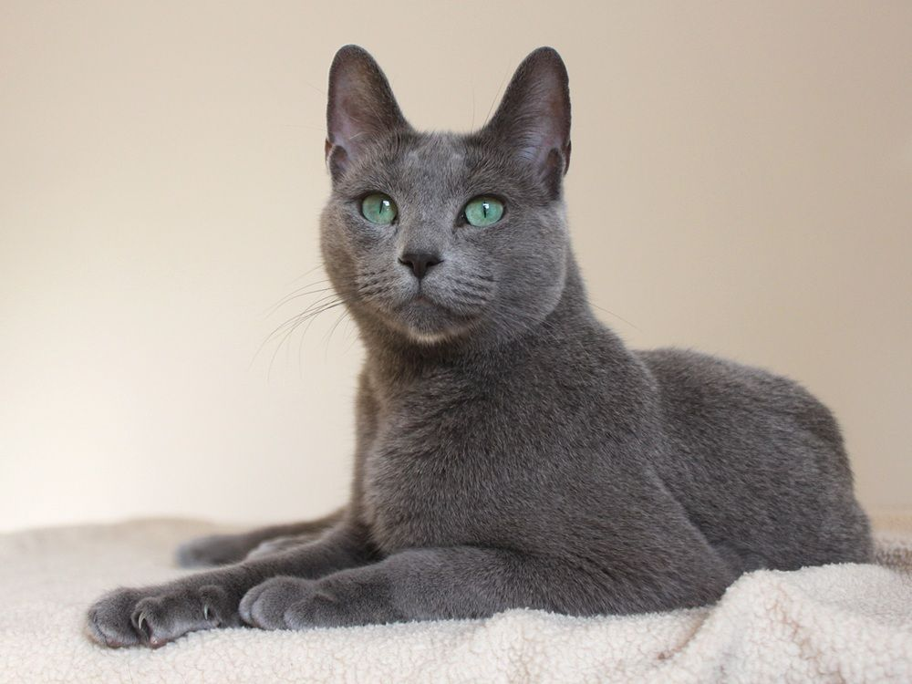
Meet the "Doberman Pinscher" of cats. Russian Blues are powerful, agile cats, with a sweet-natured temperament who combine elegance and strength in their own unique way. The breed has a signature grayish-blue coat, broad head, and eyes that are a vivid green. Its beautiful coat shimmers due to the silver-tipped hairs of its short, plush fur.
The Russian Blue is a naturally occurring breed thought to have originated in Archangel, Russia. The breed was further refined in Great Britain and Scandinavia, where it may have been introduced by Russian sailors. The Russian Blues found in the U.S. today are a result of crossbreeding the British Russian Blue with the Scandinavian Russian Blue. Russian Whites, Blacks, and Tabbies were all created by crossing Russian Blues with domestic cats. The breed was also used, to an extent, in the development of the Havana Brown and in the refinement of the Nebelung breed.
Russian Blues are very curious, friendly, and social cats. They may at times seem shy or distant, but it doesn’t mean they want to be alone. They can become depressed or anxious if they feel neglected in any way. Blues are very loyal and loving and are said to be highly empathetic and sensitive to human emotions. Due to their high level of intelligence and sensitivity, they tend to remember favorite visitors even if the visits are infrequent.
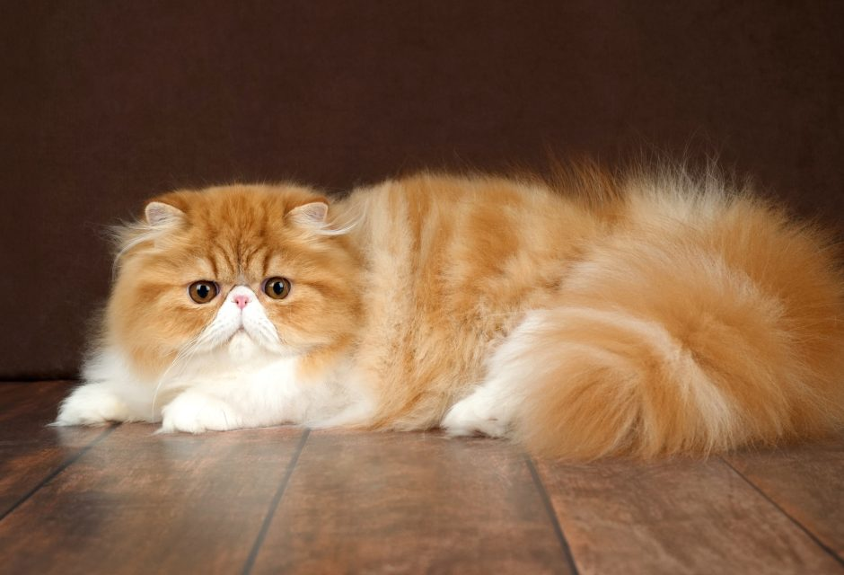
The Persian cat is considered the "glamor puss" of the cat world. It is one of the world’s most popular breeds, with an exceptionally beautiful coat, adorably chubby cheeks, expressive eyes, and an affectionate personality. The modern-day breed comes in two types: show and traditional. The show Persian is characterized by certain exaggerated features, while the traditional Persian, or the "Doll Face", is the original version of the breed without exaggerated features. However, both have long and flowing coats that come in a rich array of colors and patterns.
Little is known about the history of this breed. Legend has it that the breed was introduced in Europe in the 1620s by Pietro Della Valle from Italy, who received the cat as a souvenir from Persia. At its height, Persia encompassed the areas of modern-day Iran, Egypt, Turkey, and parts of Afghanistan and Pakistan. These longhaired cats were considered precious cargo, traveling among the caravans that moved jewels and rare spices westward from Persia. Breeding of Persians likely began in Italy and France, with the practice quickly spreading to the rest of Europe. By the early 1900s, the Persian was introduced to the United States where it also gained enormous popularity.
Persians are gentle, friendly, and affectionate. These delightful creatures are not as active as other feline breeds. They would rather spend their time lounging in their favorite spot on the sofa. They don't require as much space for activity, so are well-suited apartments and smaller living spaces. Their long and luxurious coats require daily grooming to prevent knots and tangles, as well as to provide protection against troublesome hairballs.
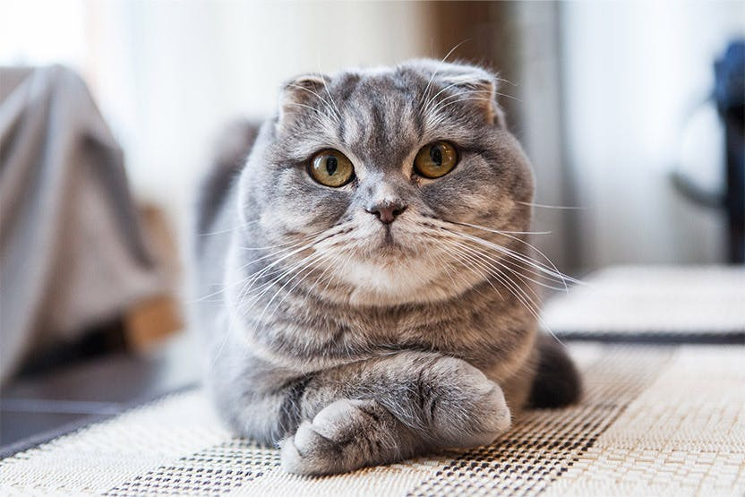
The Scottish Fold is a medium-sized feline breed, typically reaching 6-9 lbs (females) and 7-10 (males). They have a rounded face, with large eyes and a short, gently curved nose. These beauties can be shorthaired and longhaired, and come in nearly every coat color observed in domestic cats. Their coats are soft, thick, and dense.
In 1961 in Perthshire, Scotland, a shepherd named William Ross noticed Susie, a beautiful white cat with unusually folded ears. When Susie had kittens with a local tom, William Ross adopted one of the kittens whom he named Snooks, and thus began the development of the new breed. It wasn't until 1971 that the breed made its first appearance in the U.S.
The Scottish Fold is a very social and friendly cat. They do not like being left alone, as they love hanging out with their favorite humans. They will gladly engage in games with you and follow you around from room to room. Although quite agile, Folds are only moderately active, and are notorious for taking long cat naps while sprawled out on their backs.
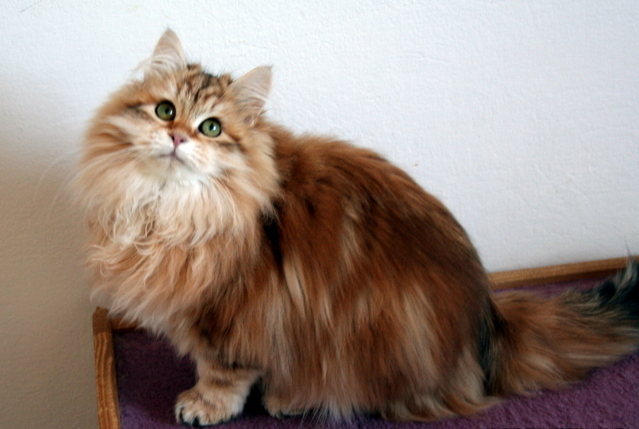
For centuries, the Siberian was a landrace variety of a domestic cat in Russia. Also known as the Siberian Forest Cat or Moscow Semi-Longhair, this cat is Russia’s national animal. It is considered an ancient cat and the ancestor of all longhaired modern-day cats. The Siberian has a dense coat that is long and luxurious. It expresses all three natural types of fur: guard hairs, awn hairs, and down hairs. Coat patterns can vary from tabby, solid, tortoiseshell, and colorpoint. With a strong but agile build, Siberians have large, rounded paws and powerful hindquarters that contribute to their exceptional jumping ability.
The first mention of the breed appeared in Harrison Wier’s book entitled, Our Cats and All About Them. Weir was the organizer of the first modern cat show at London’s Crystal Palace in 1871. The Siberian has become a highly popular breed, yet kittens are very expensive to obtain and are relatively rare outside of Europe. It wasn't until the 1990s that the breed was introduced to the United States. It was accepted for registration by the Cat Fanciers' Association in 2000 and received championship status in 2006.
Siberians are easygoing and affectionate, getting along well with other animals and with children. The Siberian is both brave and independent, yet regularly seeks companionship. It is said that they are empathetic cats with a keen sense of the emotions of others, eagerly offering their company and support to humans in need. They are also known as playful cats who keep their adventurous spirit well into adulthood.
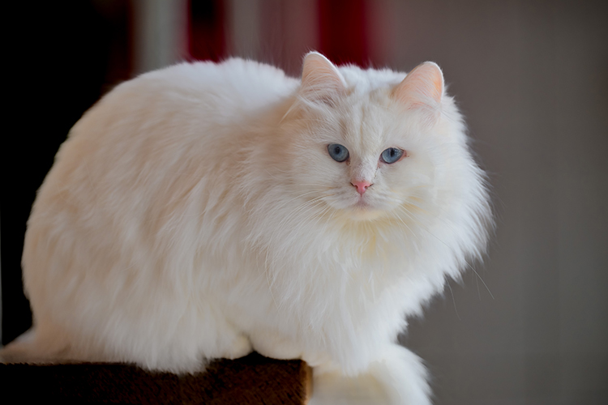
The Turkish Angora is an ancient, natural breed from Turkey. It is thought that this breed is the true origin of the mutation for white coat color and long hair in domestic cats. Turkish Angoras have silky long coats, and they carry themselves with agility and grace. They have small, round heads and pointed, wide-set ears.The eyes are almond-shaped and come in a variety of colors, and heterochromia is not uncommon. Known primarily for displaying a shimmery white coat, they can also exhibit tabby coats (brown or white), black with a chocolate brown undercoat, or a range of beautiful smoke tones.
This breed has developed through natural selection in regions of Anatolia, Turkey. Cat enthusiasts selected the Turkish Angora for its luxurious coat to refine the Persian breed. The Angora made its way into the U.S. and Canada in the 1960s. The Cat Fanciers' Association in the U.S. officially recognized the breed in 1963, accepting only white Angoras until 1978. Today, cat registries across the United States recognize a range of Turkish Angora coat colors and patterns.
Turkish Angoras are affectionate and highly intelligent. They are very curious and enjoy being involved in your daily activities. Though they get along well with children and other pets, they tend to form a strong bond with one person in the family and can become very protective of them. They do not like to be left alone and can become easily stressed if they are on their own for long periods of time. Turkish Angoras love to play and enjoy climbing and spending time on high perches.
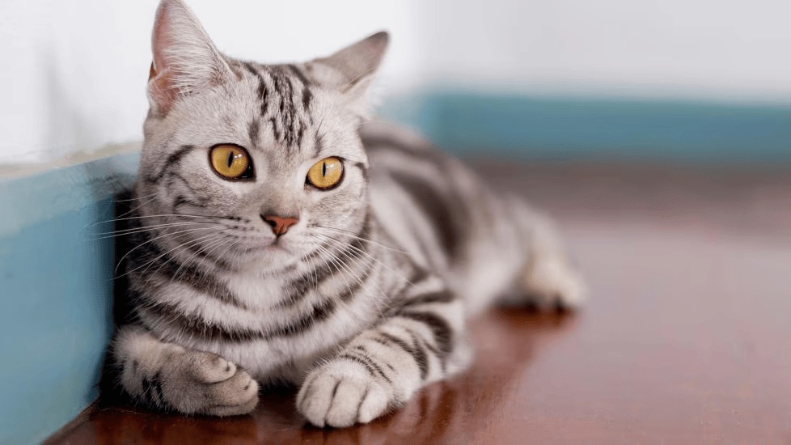
The American Shorthair (ASH) has all the characteristics of a skilled hunter. It is a sturdy, powerful, and agile breed that is full of endurance. These beauties are defined by their large heads, powerful jaws, and full cheeks. American Shorthairs have short, dense coats that come in various colors and patterns including gold, brown, cameo, calico, and silver tabby. Their eyes are large and distinctive, and range in color from blue and green to copper, hazel, and gold.
The first American Shorthairs were believed to have accompanied European settlers who set their sails for North America. They were brought onboard to protect the ship's cargo from rodents. In 1906, the Cat Fanciers' Association officially recognized the ASH breed, which was at the time called the Domestic Shorthair, as one of its five registered breeds. These hardy companions received their American Shorthair name in 1966 to differentiate them from regular random-bred, domestic shorthair cats.
The American Shorthair is the ideal family cat for its social, easygoing, and affectionate nature. Though not typical lap cats, they will certainly appreciate a spot next to you on the sofa. As a moderately active breed, American Shorthairs are not overly demanding of attention and tend to be good at keeping themselves entertained. When not hunting for insects and other small critters, the American Shorthair is often found spending its time lounging in the sun.
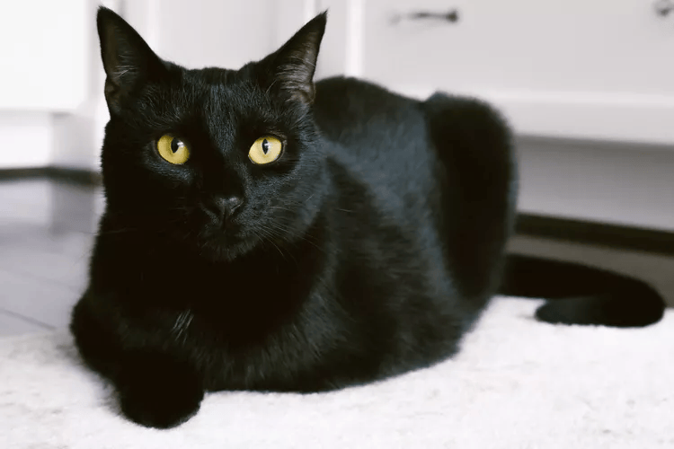
The Bombay cat is a muscular powerhouse of love who can't wait to spend time with you. These mini panthers are striking in appearance, abundant in personality quirks, and ready for adventure. Also known as the "parlor" or "mini" panther, the Bombay is one of the most beautiful black kitties around.
The Bombay breed emerged from U.S. cat breeder and Kentucky resident Nikki Horner's efforts to breed a Burmese cat with an American Shorthair cat in 1958. The result was a a sleek, gorgeous black coated cat with stunning eyes of gold. Development of the breed with the addition of both British and American Shorthairs continued for many more years.
Bombay cats are known for their deep loyalty and affection toward humans, even ones they don't know very well! They require a lot of attention, and prospective cat parents should know that don't do well being left alone for an extended period of time. The Bombay is an active and intelligent cat that enjoys games of fetch and other opportunities for play. They are vocal kitties (but not highly so) who make wonderful companions in households with children and other pets.
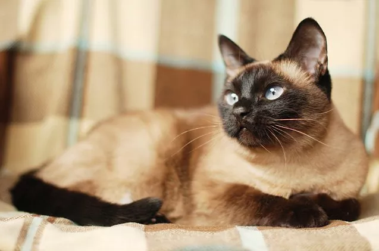
Who is considered royalty in the world of cats? The Thai Siamese of course! Also called the Siamese, this feline’s charm and striking appearance helped it earn a royal status and keep it for centuries. One recognizable display is a high contrast colorpoint coat pattern with dark fur near or on the face and ears, as well as their legs and tails. However, there are four possible color combinations that include chocolate point, seal point, blue point, and lilac point. The Siamese is an outgoing, chatty breed that is famous for its remarkable blue eyes, noticeably large ears, and its sleek and muscular body. These cats adore love and affection, and in return provide loyal companionship.
Originating from Thailand (formerly known as Siam), it is believed that the breed then made its way to Europe in 1884. British Consul-General Edward Blencowe Gould brought a breeding pair of cats from Bangkok which he gifted to his sister, Lilian. Cat fanciers increasingly imported cats from Thailand, gradually forming the foundational breeding pool for the Siamese in England. In 1878, thefirst Siamese cat was supposedly given to Lucy Webb Hayes, First Lady and wife of President Rutherford B. Hayes, by U.S. Consul David Stickles.
Thai Siamese are very affectionate and intelligent cats, with a distinctly outgoing nature. They seek and enjoy the company of humans as well as other cats. They tend to strongly bond with one person in the family. These kitties are very vocal and will often demand your attention with a loud, low-pitched persistent voice that has been nicknamed "Meezer".
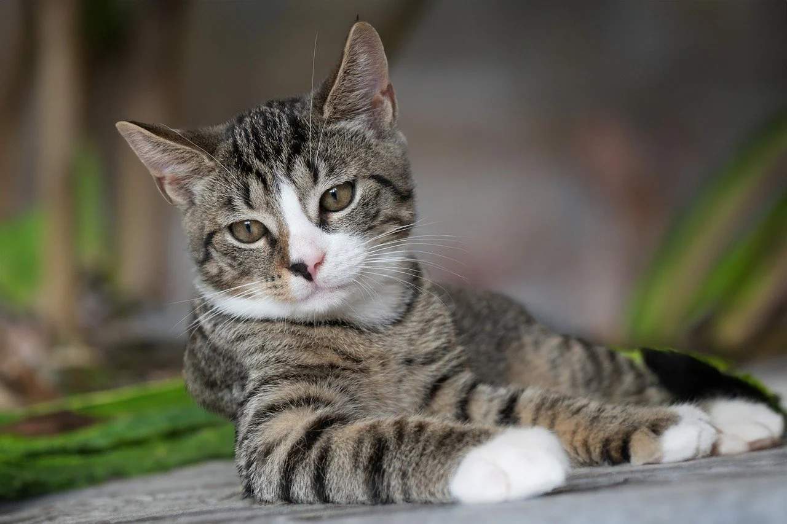
The beauty of the Domestic Shorthair breed lies in its diversity. They come in all colors, patterns, shapes, and sizes. Typically, a Domestic Shorthair is a medium-to-large sized kitty that often has a round head, medium-long tail, and round paws. Males are generally larger than females and have broader heads. They have dense, sleek coats that vividly vary in color and pattern. Main coat colors include white, black, red, grey, brown, cream, cinnamon and fawn, and some commonly observed patterns in Domestic Shorthairs are solid, bicolor (i.e. tuxedo), tricolor (calico), colorpoint, tabby and tortoiseshell.
A Domestic Shorthair/Polycat is a remarkable result of many generations of mixed breeding between different types of cats, which is why the ancestry and origin of these kitties can be very difficult to determine. According to ancient feline DNA analysis, domestic cats are likely descended from the African wildcat (lat. Felis silvestris lybica) (Ottoni et al, 2017) found to be living several thousand years ago. However, most domestic breeds are less than just 100 years old, which is far from ancient royalty. This means that all modern domestic cats, including purebred cats (hybrids, excluded), have Domestic Polycat origins. In fact, out of all the cats in the world, most are actually mixed-breed Domestic Polycats! When Basepaws analyzes your cat's DNA, we look for sequences your kitty has in common with the purebred cats in our database. We record the number of similarities and then use this value to determine how similar your cat's DNA is to each breed. Cats within one particular breed share more DNA with each other than with other domestic cats, but there is still a high level of diversity and variation in each breed. We mark the sequences of unclear origin as domestic polycat sequences.
Since the Domestic Shorthair breed is really comprised of many different breeds mixed together, their personalities vary widely. However, many are known to be fun-loving, people-oriented, and loyal cats that enjoy spending time playing and engaging with their favorite family members. This breed is truly a mixed bag of personality and character, so it's always an adventure getting to know your sweet Polycat kitty!
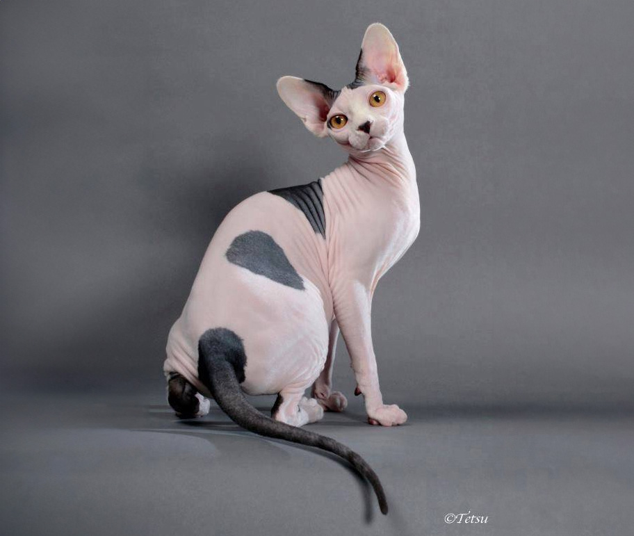
The curious Sphynx is a medium-sized cat that typically weighs from 6 to 12 pounds. They are without fur and have a smooth, muscular body is covered in very fine hairs. This gives them a bald and wrinkled appearance and chamois-like texture. Their head is wedge-shaped, with prominent cheekbones, large ears and distinctive, lemon-shaped eyes. The charm of their unique appearance includes noticeably thicker paw pads in comparison to other cat breeds. The Sphynx comes in all colors and patterns. They can be solid (white, black, red, brown, lavender) or patterned (bicolor, calico, tabby, tortoiseshell, pointed and mink). The color and pattern is seen in the pigment of their skin, which can make it a bit more difficult to distinguish from how color presents in cats with coats.
Sphynx cats originally come from Canada and they came about completely accidentally. One of the first ancestors to the popular breed was Prune, a hairless kitten born in 1966 in Toronto to a black and white domestic cat Elizabeth. Prune's hairlessness was the result of a natural, recessive mutation. Elizabeth’s owner recognized the uniqueness of the kitten and was set to reproduce him. Along with other hairless cats found across the globe, Prune was bred to cats with normal coats and then back to hairless cats to create a large gene pool. This way, breeders could ensure that the new breed would be affected by fewer inherited genetic health conditions.
Sphynx are very outgoing, energetic, and intelligent. They will cherish your companionship, but also the companionship of other cats and dogs. In fact, they are so friendly that they were rated as the most affectionate cat breed in a study conducted by Asselineau and Abitbol in 2012! The Sphynx isn't shy and won’t hesitate to demand your attention. Their sweet-nature is accompanied with a great sense of humor, too! They will always find a new way to entertain you. They are highly playful, and will engage in many activities around the house to keep entertained. And when they’re not on the go, they love cuddling and resting on your lap. Sphynx cats serve as excellent therapy pets because of their warm nature and genuine love of meeting new people.
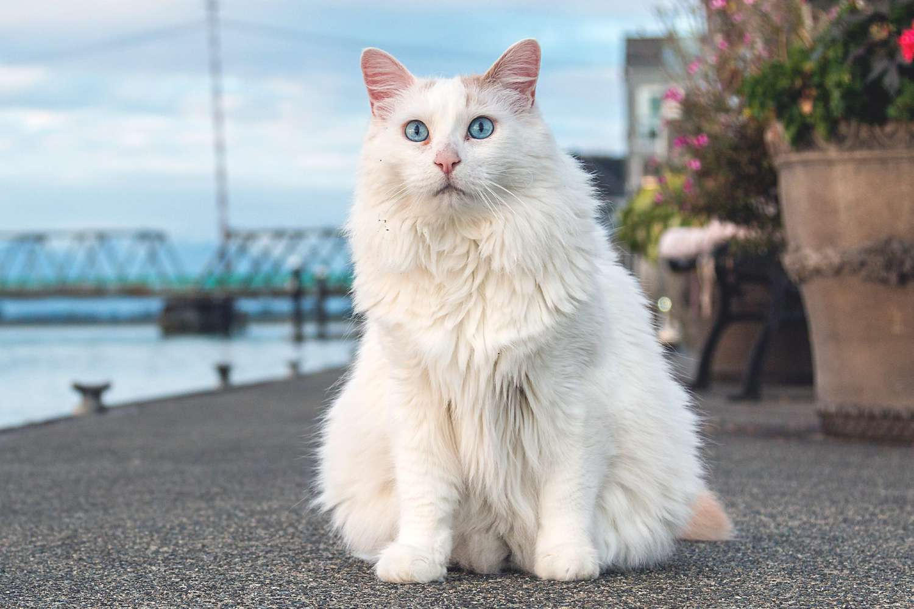
The Turkish Van is regarded as one of the most beautiful cats in the world, with their predominantly white body that is kissed with darker markings on their head, tail, and/or back of their shoulders. These fur decorations are known as the “Van Pattern.” These markings can come in many colors and arrangements, including black, blue, and red. Their patterns can be solid, tortoiseshell, or tabby. The most famous design for the Van is a burst of red or brown on their head and tail. More rare are solid all-white Vans, which are known as “Turkish Vankedisi” or "Van Kedi".The Van’s body is often compared to a swimmer’s body, as they have large barrel-chests matched with a durable and extended frame. Their tail is lengthy and sturdy, known for its beautiful blossoming fur. They have a stocky neck attached to broad shoulders and can weigh up to 18 pounds (8.16 kg). This is why the Vans are frequently referred to as the ‘jocks’ of the cat world. The Van’s coat is soft to the touch and absent of an undercoat. With semi-long hair that is often compared to cashmere. The Turkish Van has two coat lengths depending on the season; the winter coat is longer and thicker than its shorter and thinner summer coat.
The history of the Turkish Van dates back to between 6,000 B.C. and 3,000 B.C. Considered one of the oldest breeds in the world, ancient artifacts have been found that depict cats that are believed to resemble the Turkish Van. The modern history of the Van can be traced to Sonia Halliday and Laura Lushington. They were two British photographers on assignment in 1955 to capture images of Lake Van, the largest body of water in Turkey. They were gifted two (unrelated) Turkish Vans after they completed their assignment. Each cat had the "Van pattern" that is now famously associated with the breed. The two cats were mated and served as the base-lineage for Turkish Van cats in England. The Turkish Van was officially introduced in the United States in 1982.
Not one for long cuddles, the Turkish Van is all about adventure and action! They want to play and are well known for their dynamic personalities. These cats have strong and deep relationships with their guardians. They insist on getting a lot of attention and plenty of opportunities to play. Often, if they do not get the amount of acknowledgment they want, they will indeed let you know. Vans are an extremely talkative breed and will talk, sing, and yell at you whenever they see fit. Due to the Turkish Van’s activity level and territoriality, they are not recommended for homes with small children. Vans truly like to be up in high places and enjoy looking upon their environment from atop of shelves and refrigerators. Vans are confident and seem to take the position as the defender of the home, and may growl if they are threatened.
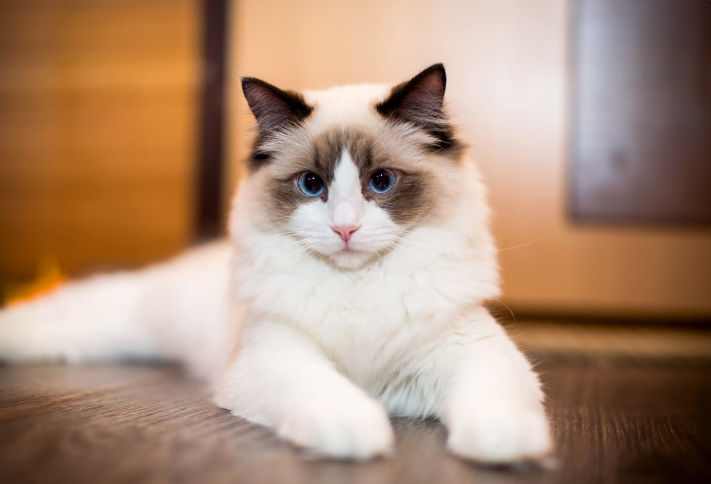
The Ragdoll is considered one of the world's largest cat breeds, along with the Maine Coon, with an average weight that ranges from 10 to 15 pounds. These friendly felines are semi-longhaired, blue-eyed, colorpoint cats that come in in a variety of coat patterns, colors, and colorpoint combinations. The four patterns include bi-color, van, mitted, and colorpoint. These patterns come in blue, seal, chocolate, lilac, cream, and red colors and colorpoint can be solid, lynx, tortie, or a combination of tortie and lynx called "torbie".
The Ragdoll is native to the United States. It is said to have originated in California during the 1960s when breeder Ann Baker bred Josephine, a free-roaming domestic white longhaired cat, with other free-roaming cats in her neighborhood. As she continued her breeding program, Ann selected cats with specific aesthetic qualities and temperaments to create what we know today as the Ragdoll. Though there is no way to know, some believe that Josephine may have possibly been a hybrid of a Persian, Birman, or Siamese.
These elegant kitties are easygoing, calm, sweet-natured, and known to enjoy cuddles. They exhibit quirky behaviors such as drinking water from the faucet or going "limp like a ragdoll" when held. They are the ultimate lap cat, and their docile manner makes them perfect companions for families with children or other pets.
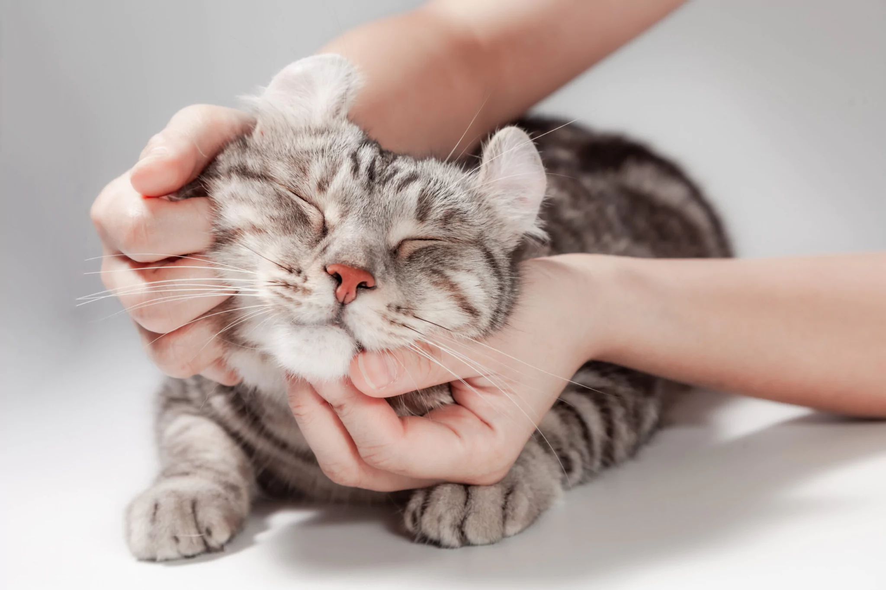
The American Curl is a medium-sized cat with a rectangular body, walnut-shaped eyes, and a silky coat that comes in both shorthair and longhair varieties in many colors and patterns. Their ears are actually straight when they are born and only begin to curl—first into a tight "rosebud" within three to five days—then resting into their final backwards curled position around 16 weeks of age.
The American Curl pedigree breed traces back to a cat named "Shulamith", a stray longhaired female who endeared herself to Grace and Joe Ruga of Lakewood, California in 1981. This black-coated beauty gave birth to kittens that developed curled ears that are now the signature of the American Curl breed. Selective breeding picked up speed two years later in 1983 to develop a show-quality breed that was recognized by The International Cat Association (TICA) in 1987. Roy Robinson, the same geneticist that performed the first analysis of American Wirehair fur to distinguish it from Cornish and Devon Rex cat breeds coat genetics, studied American Curl ears and confirmed that the gene responsible for the breed's signature ears was autosomal dominant, which means that any offspring with one copy of the gene from a parent will display the curled ear trait.
The American Curl is a sweet, people-oriented cat that is always interested in what you're doing. They can be vocal at times, and love to follow you around the house. They are curious and love to explore, so providing high areas for climbing and jumping and other opportunities for play will go a long way toward keeping your American Curl kitty happy and engaged.
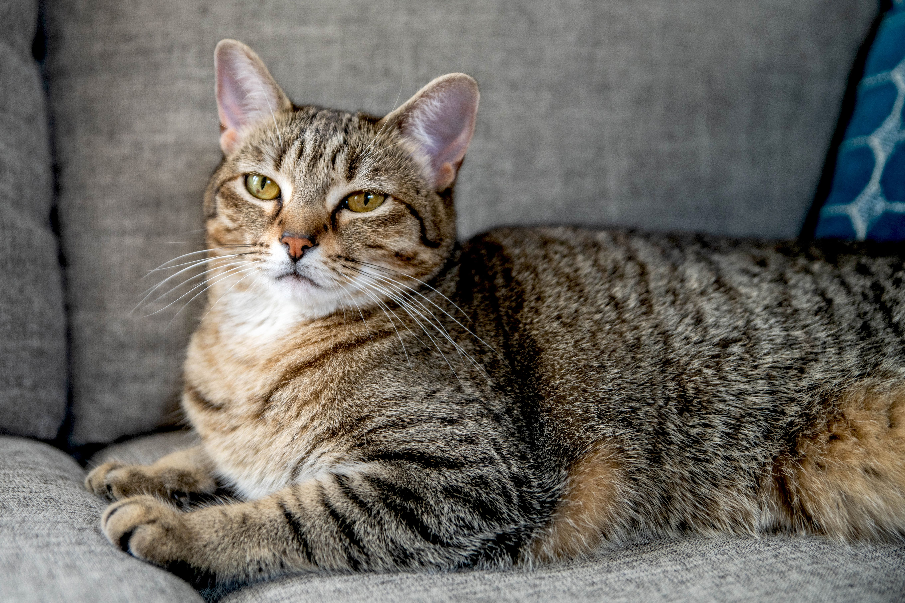
It is no surprise the tabby cat is ubiquitous—the gene for the tabby pattern can be found in all domestic cats. If you look at a coal-black cat in the sun, you may see hidden tabby markings on them, too. These wildly patterned pets vary in size and temperament because they encompass so many different breeds, but tabby enthusiasts agree that friendly, curious, outgoing personalities are common temperaments among tabbies. However, each cat will have their own temperament and personality based on many different factors, including socialization, experiences with humans, and more. Tabby cats can be large or small, depending on their breed. If your tabby is a Maine coon, they'll be one of the largest cat breeds in the world. And on the other end of the spectrum, your tabby could be the smallest cat breed in the world, the Singapura.
Because the tabby cat pattern exists in so many different breeds, each with its own history and place of origin, it's quite difficult to determine the history of the tabby cat. Some say the tabby cat originated with the Mau, an ancient Egyptian breed developed from the domestication of the African wildcat. Their modern descendant is the Egyptian mau, who bears a tabby pattern. Perhaps the most distinctive feature seen in the Mau and other tabby cats is the vague marking of the letter "M" on their foreheads.
Tabby cats have a reputation for being smart. For pet owners, owning an intelligent cat can have its perks. Your little tiger will quickly learn to use the litter box, and they'll be running through the pet door in no time. They are also often described as social animals. They love their human families, and usually like to be the center of attention. Tabby cat owners often find their family pets are affectionate companions. These sweet, patterned cats aren't afraid to show you they care. Another common tabby cat trait is that they like to be active. They can be curious and will explore the neighborhood if you let them.